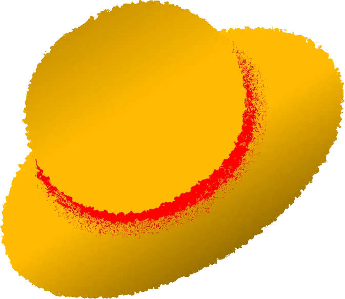

Piece Launcher
A dark, compact and fast Minecraft launcher.
DownloadWindows installer (.exe)
Latest version: 0.8.2-alpha
Focused
Almost black interface with a single warm accent. No clutter, just your game.
Profiles and versions
Pick a version and a profile right from the launch bar and hit play.
Microsoft login
Sign in with your Microsoft account to play with your own skin and name.
Discover mods
Browse content from Modrinth without leaving the launcher.
Themes
Dark Orange, Crimson Red, Forest Green, Midnight Blue, Dark Purple and Light.
Open source
The code is public on GitHub. Read it, build it, improve it.